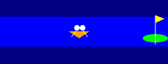

Module 3 · Distributed communication
Beat the Tide
A rowing game for two people playing on separate ESP32s.
I picked rowing because I could picture each of us holding one side of the boat. What I was less sure about was the button. Were we really just going to press it twenty times in twenty seconds? The part I wanted to play was trying to catch my partner’s rhythm. That became the rule I spent the most time changing.
Playing the first version
I worked on the rules and what the players see on their screens, and I tested changes with both boards plugged into my laptop. In my first sketch the two rowers were little white circles on an orange triangle. I could see the boat moving toward the flag, but when I held a board I still had trouble telling which oar was mine. I wanted the view you’d have sitting in the boat, with an oar on either side and something on the horizon to row toward. In the version below, the bright oar is the one I control. If I press by myself, I can see it swing. The island stays where it is until my partner rows with me.


Both scenes are enlarged illustrations from the sketches’ drawing coordinates. The first shows ten paired strokes and the second shows ten spaces.
I finished an early round without realizing whether I’d won. I asked for a timer I could see while rowing and a result that would stay up long enough to read. Now the number in the corner shows how many seconds we have left, and the little bar under the boat shows how long we have for this stroke. I also asked for confetti when we reach the island. Once we’ve seen our score, either of us can tap to play again.
How we start a race
Before we plugged in both boards, I thought we might each need a laptop and have to start the game at exactly the same time. Once the sketches are uploaded, the cables just supply power. We can each pick up a board and press Ready when we’re settled.
I expected the two uploads to look quite different. When I put the sketches side by side, this was the only line that changed. Both use team 73 so our boards recognize each other’s messages.
Left oar
const byte PLAYER = 0, TEAM = 73;Keeps time and awards points.
Right oar
const byte PLAYER = 1, TEAM = 73;Reports its tap and follows the race clock.
The right board sends its ready flag over ESP-NOW. When the left board has heard from its partner and its own player has pressed Ready, it starts a three-second countdown. The right screen follows along. This is why pressing a button on just one board leaves you on the start screen.
Timing the strokes
A board’s clock starts when it powers up. If I plug mine in five seconds before yours, comparing our raw clock readings would make even a perfectly matched stroke look five seconds apart. What matters to the boat is where each tap lands within the current beat.
uint32_t elapsed = PLAYER ? state.elapsed + (now - rxClock) : now - start;On the left board, now - start tells me how far into the beat I pressed. The left board sends that elapsed time roughly every 30 milliseconds. On the right, rxClock records when the last update arrived. If that update said 280 ms and I press 20 ms later, the right board records my stroke at 300 ms. The estimate can be off by the time the radio message spent in transit.
I wanted the oar to move every time I pressed, even if I’d already used my stroke for that beat. Those two things happen in different lines.
sweep(PLAYER, now);
localMoves++;
if (myTap < 0 && elapsed < BEAT_MS)
myTap = elapsed;sweep() starts the animation immediately. Below it, myTap starts at −1, so only my first press saves a time. If I see my partner tap and quickly press again, the game still uses my original stroke. The right board sends that time with the round ID and beat number so the left board can tell which stroke it belongs to.
Each beat accepts input for 1,400 ms. The host waits another 100 ms before clearing both taps. Say the right player taps at 1,390 ms and the message arrives at 1,420 ms on the host clock. That stroke can still pair with a left tap from the same beat. A new press at 1,420 ms is too late. Those extra milliseconds are for delivery. Twelve beats of 1.5 seconds make the 18-second round.
Changing the scoring
When I kept winning, my first thought was to make the round a little shorter. But the part that bothered me was that we could both tap quickly at our own pace and still move forward. I liked giving us one space when we were a little off. I just wanted there to be a point where we’d have to look at each other and try again. I settled on three of those +1s in a row.
if (!scored && myTap >= 0 && theirTap >= 0) {
if (abs(myTap - theirTap) <= SYNC_MS) {
state.score += 2;
state.result = 2;
state.singles = 0;
} else if (state.singles < 3) {
state.score++;
state.singles++;
state.result = 1;
} else {
state.result = 3; // Blocked pair: feedback only, no point.
}
scored = true;
if (state.score >= TARGET)
state.phase = WON;
}Say I tap 300 milliseconds into the beat and my partner taps at 700. We both rowed, but we were 400 milliseconds apart, so we earn one space. Do that three times and we’re at three spaces. The fourth loose pair leaves us at three. That’s what state.result = 3 tells the display to explain. It’s a feedback code, not three points.
Now suppose our next taps land at 300 and 450. That 150-millisecond gap fits inside the 180-millisecond window. We move from three spaces to five and clear the streak. Skipping a beat won’t clear it. I also learned why scored belongs outside all three outcomes. The boards keep exchanging the same tap until the beat changes. Even a blocked pair needs to be marked as handled so the host makes exactly one decision per beat.
I wanted a round we might actually lose. In the final version we need 19 spaces in 12 beats. Even if we both press on every beat, we need at least seven synchronized strokes to get there. I can explain that cutoff from the code. To find out whether crews actually win about half the time, I’d need to watch more pairs play.
Code and build instructions
The repository includes both board sketches, the display setup, and how to start a round. Open the project on GitHub. We started from Professor Tseng’s Button Mash Racer.
AI support
I used ChatGPT (GPT-6) to help debug timing between the two ESP32s when a button press didn’t show up right away. One question I asked was, “How would it start at the same time?”